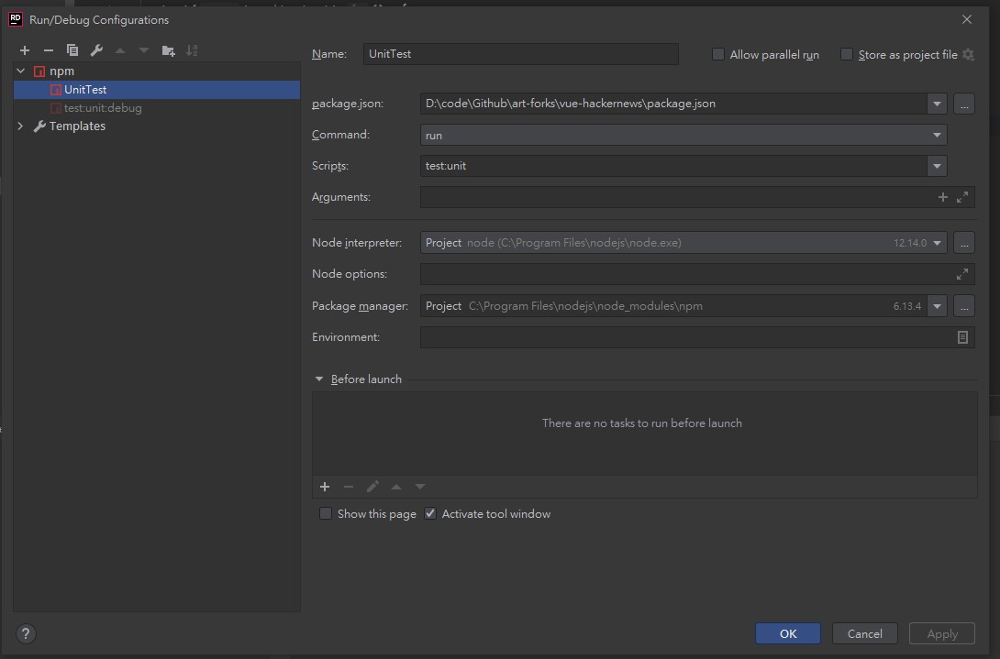
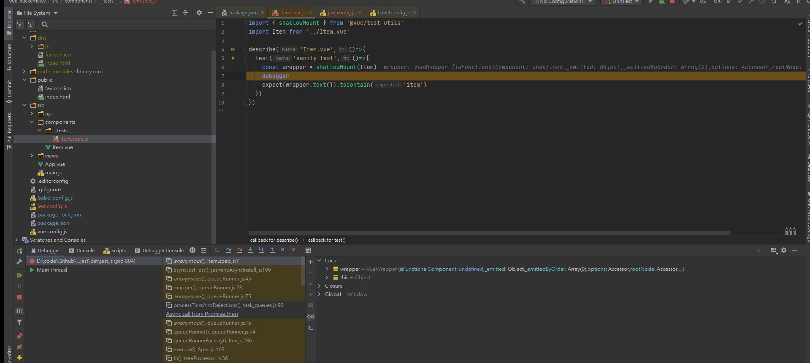
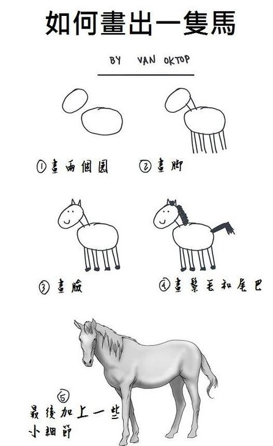

vue.js 應用測試 - testing vue.js application一本專注於如何測試 vue.js 應用程式的書籍，雖然出版已經有一陣子了，但對於如何測試 vue.js 來說，是一本很優秀的入門書籍
在其他關於 vue.js 的書籍中通常都用一兩個章節提到 vue.js 的測試；或者是在講測試的書籍內，用某些前端框架作為例子，用幾個章節介紹，我沒有看過一本專門講 vue.js 如何測試的書，因此這本書的確很吸引我，所以盡管這本書已經出版好一陣子，我還是打算買下來，並好好研讀一下；但是畢竟這是一本關於前端框架測試的書籍，而我本身其實並沒有對前端涉略很多，工作上也用不到，因此書籍的某些章節會略過，真的想了解的朋友可以自己買書研究一下
這本書畢竟是在講測試，所以會假設讀者都已經對 vue.js有一定認識，所以一些東西就被歸類於常識，如果對於 vue.js 比較不熟，可能還是需要先了解一下，另外，這本書畢竟有點久了，跟著書籍的步驟練習的話，可能會發生套件相容的問題，這個時候看是要去切換分支比對各個套件依賴關係，確定可用的套件版本，或者是自行依照錯誤訊息，確認相關套件是否需要隨著更新，這些就不再撰述
簡單的說就是當時安裝的是甚麼套件，現在手動練習的話，你也要安裝相同版本的套件才不容易出錯；要不就是自己解一下衝突，看一下哪個套件要更新版本
準備工作
書籍提供一個用來練習的 repository hacker news，但是按照步驟將他還原套件的時候會發現在安裝firebase套件的時候錯誤，也上網找了很多解決辦法，但是沒一個能穩定運作，專案還原到懷疑人生
最後嘗試很多種辦法，我最後也不確定哪一種才是關鍵因素，因此都列出來
- 參考 windows 下安装 node-gyp 處理
node-gyp的問題 (npm install --global --production windows-build-tools) - 將專案本身依賴的
firebase砍掉，然後重新安裝最新版本
但其實或許也可以將套件記著，全部砍掉後重新一個個手動加入依賴，但我已經不想去測試了，底下是截至第二章結束時，正常運作的package.json
1 | // package.json |
之後雖然作者在每一個章節都有提供分支做切換，但被坑過的我，第一次測試 OK，切到分支第三章，重新再跑一次就又被整到懷疑人生了，因此這一次我直接從第二章的分支開始做，然後不做分支切換了。如果要參考相關 Code，應該就是自己再另外開一個 Repository 去做切換來觀看。這一次練習的也會放在 Github:my practice commit history，如果有需要參考的人請自取
第 1 章 Vue 程序測試介紹
第 2 章 創建你的第一個測試
經由本章介紹，熟悉專案內容的各項功能
- 執行專案
npm run serve - 執行 ESLint 檢查：執行 ESLint 後，書上說的錯誤源自於
src/components/ItemList.vue，實際上是src/views/ItemList.vue - 編譯網站：如果發生錯誤是與
firebase有關，可以參考一下準備工作 - 建立單元測試：
jest框架預設的測試檔案 pattern：**/__tests__/**/*.[jt]s?(x), **/?(*.)+(spec|test).[tj]s?(x) - 讓 Jest 支援 Vue SFC (Single File Component)
- 如何 debug 測試程式
跟隨著章節練習，手動加入套件的時候可能會發生奇奇怪怪的錯誤，猜測應該是當時的jest套件比較舊，而現在的jest套件與專案內的babel core衝突，解決辦法就是將package.json內的 babel 依賴砍掉，重新再安裝一次babel就好了
1 | npm install --save-dev babel-jest vue-jest @babel/core babel-core@bridge |
這邊順便介紹了一個知識點，透過
--將參數帶給 npm 的指令，例如npm run unit:test -- --watch
產生 jest.config.js
這邊不採用將設定寫在package.json的方式，而是直接透過jest --init的方式來產生設定檔，之後再自行修改
特別注意需要確認
testEnvironment使用jsdom，如果在 init 的時候有回jsdom的話就沒問題，我是點了node結果發生錯誤查半天，最後才發現我選錯了，要選jsdom才對
讓 Jest 支援 Import 、支援 Vue SFC
要讓jest支援import的語法，請參閱Configuring Jest，這邊有提到需要顯式指定transform區段的設定，可參考babel-jest的設定方式範例，在vue-jest有提到一些相關版本的注意事項，因為現在是新安裝，採用的 babel > 7，且 jest > 24，所以還要再額外安裝套件
1 | npm install --save-dev babel-core@bridge |
並且加上 vue 的設定，最後設定的部分看起來是這樣的，要注意 js 的 regex pattern，可能會因為我們檔名用 item.spec.js，不符合^.+\\.js$這種 pattern，所以只判斷副檔名結尾即可，或者是自己重新寫一個符合的 regex pattern
1 | transform: { |
但是到這邊之後還沒完，接著要讓測試把 Vue Component 掛載起來，官方有推出一個測試工具可以使用
1 | npm install --save-dev @vue/test-utils |
可以參考一下官方文件：用 Jest 测试单文件组件，大概都把重點說出來了，難怪人家說 vue 的文件做的很棒
一般狀況下如何 debug 測試程式
- 在程式中下中斷點
debugger - 透過
node --inspect-brk ./node_modules/jest/bin/jest.js --no-cache --runInBand執行測試 - node 會顯示監控一個 websocket 的時候，透過 chrome 開啟 chrome://inspect，從 Remote Target 底下點
inspect開啟一個 DevTool - 在 DevTool 可以執行 F8，讓程式開始執行，接著會中斷在
debugger的地方
使用 Rider / WebStorm 如何 debug 測試程式
但如果你用的是Rider，先設定一個執行的設定檔

然後按旁邊的蟲蟲 Icon，直接就可以在 IDE 裡面 Debug (這邊上面的綠色 Play 旁邊那個 Bug Icon 沒有截圖好)

第 3 章 渲染組件輸出測試
這裡採用有點類似 TDD 的概念先將需求釐清，確認那些 Component 要做到那些事情，然後先寫測試；再這邊的準備工作就是將職責確定好，分析的方式可以仔細看看書裡面，分析完畢後就是接著實作，書籍先示範了一次 item.url 這個屬性的測試；接著大概就是以測試驅動的方式產生 production code，也就是實際上 Item Component 的實作
原文中提到：其他兩個測試與你剛剛編寫的測試非常相似，因此在這裡就不再重複展示了。
所以從 repository 切到 chapter-4 分支，來看看這段消失的歷史發生了那些事情

還好上面的事情沒有發生，它只是略過了兩個類似的測試而已，如果它能順便附上
item.score、item.by，就是所謂的其他兩個測試，我會覺得好一些，這兩個測試與先前的大同小異，測試只要判斷有抓到一樣的文字就好，在 production code 那邊要考量到顯示的結果，所以要再另外編排一下畫面。接著透過範例來介紹如何取得元件內的元素、測試標籤的文字內容以及屬性，在這邊有一個重點是避免透過 boolean 來做斷言，因為出錯了你看訊息也無法明確的知道為什麼失敗，我們在撰寫單元測試的時候很重要的是，當它失敗的時候我們能夠確切的知道為何失敗，若是回應 boolean，這應該很難達到
接著我們希望能夠測試被渲染出來的子組件數量有多少個，在這邊的情境是 ItemList Component 有沒有正確的 render 出來對應數量的 Item Component；用這個案例來帶出 mount 與 shallowMount 的差異，這邊照著書裡面的流程一步步做就可以了
書裡面教到的
findAll方法，在新版的測試工具提示為過時，要改用findAllComponents
最後一個步驟是用進度條 component 來帶出測試樣式的方法，這邊書裡面有提到因為樣式的部分對網站顯示蠻重要的，所以可以先透過切換章節的 branch 去看看各個 SFC 的樣式
第 4 章 測試組件方法
測試公共組件、私有組件方法
這裡有提到私有方法是實現細節的，因此不用直接為他們編寫測試，我也因此聯想到自己的經驗，通常我們測試的都是邏輯，而非實作細節，所以還蠻贊同的。
以上一章節的進度條作範例，提供方法給外部呼叫，並說明測試的條件，作為入門我覺得挺好，因為夠簡單也沒有依賴其他東西，但如果你依照書裡面的作法，還是錯誤的，我不確定是否是因為依賴套件版本的關係，但是牽涉到變更 component 狀態，可能還要考慮到 DOM 是否有 re-render，查詢了之後，解決方案是await Vue.nextTick()，所以在之後的測試程式中，需要先等候 re-render 的情況，就需要先加上await Vue.nextTick()之後才去斷言
因此第一個範例應為
1 | test('displays the bar when start is called', async () => { |
測試使用定時器功能的代碼
正如書中所說的，js 裡面要去測試有setTimeout這種東西無疑是很拖累單元測試速度的一件事情，所以這邊提出的解決方案是，使用自己的函式去替換掉原生的setTimeout，書裡面稱之為模擬函數，而在我們所使用的測試框架裡面，也有提供了這樣方便的工具來讓我們模擬定時器的功能 jest.userFakeTimers()；這邊書裡面的註解就很清楚，在測試之前，我們透過jest提供的假計時器功能取代掉實際上真正的計時器，然後在我們的測試程式裡面，我們要告訴jest的計時器功能，時間再往前推進多少，很好理解，但實際操作後，還是要加上await Vue.nextTick()才能順利測試成功。
我的理解是在需要斷言的地方，先等待Component re-render 完畢，才去斷言，因此都是加在expect前面，但加到現在為止我已經加了很多次，我都懷疑是不是我打開範例的姿勢錯誤了，所以才需要加這些東西，還是真的如我所說的，因為我用的套件版本比較新，跟書上不一樣….第一次寫心得寫的這麼心虛的。
整個計時器的範例是這樣的
1 | // ProgressBar.spec.js |
而透過這個例子，順勢帶出來第二個測試案例，因為結束的時候要清除計時器(clearInterval)
1 | finish() { |
所以依照測試情境，透過jest提供的spyOn讓他監視 window 的clearInterval方法，接著模擬 setInterval 的返回值，最後斷言該方法有沒有被我們指定的值呼叫
1 | test('clears timer when finish is called', () => { |
使用 mock 測試代碼
這裡的解釋有點難懂，但看圖卻很好理解，在實際應用透過 Vue Instance 去載入 ItemList這個 Component，此時因為先前有將ProgressBar注入到 Vue Instance 裡面，因此ItemList可以調用$bar屬性，呼叫到進度條，但是在單元測試只有載入ItemList，因此若調用不存在的$bar 屬性，就會產生錯誤，大概就是這個意思，所以我們這邊會利用到mock的方式來解決這個問題，一樣透過jest提供的 mock 函數。情境是當ItemList元件被載入的時候，希望他會去呼叫進度條的start方法，所以為此撰寫的測試是
1 | test('calls $bar start on load', () => { |
但是這樣又會讓先前一個測試失敗，要解決這個問題之前，模擬模塊依賴關係了解一下
模擬模塊依賴關係
若要模擬 api.js 的fetchData方法，我們就要先建立一個 mock 的文件，讓 jest 知道他實際上真正應該要解析的 mock 文件，而非被請求的文件，mock 文件內我們只需要包含測試會用到的函數就好，如下
1 | // src/api/__mocks__/api.js |
關於 mock 的部分可以在看一下官方文件說明，會比較詳細；接下來範例就直接看 Code，重點是要先看一下他ItemList元件，掛載之後要做的事情，其實也就是載入的時候先呼叫進度條start，然後打 API 要資料，結束之後呼叫finish，在這邊就透過jest.mock()模擬api.js，因為又有用到flush-promises，所以也要先安裝一下
1 | npm install --save-dev flush-promises |
1 | // 讓jest模擬api.js |
這邊要提一下，如果你跟我一樣都寫過 C#的測試，可能會覺得奇怪為什麼測試程式中，明明就用到了 fetchData，但是測試程式卻不用去模擬呢？C#寫測試的時候我都還要用 NSub 在每一個測試中去 mock 有用到的 function，並指定回傳結果呢…因為一開始，我們有先把 mock 的東西寫在src/api/__mocks__/api.js，而且在測試文件開頭有jest.mock('../../api/api.js')，這兩個搭配在一起，所以jest會知道 fetchData 被模擬了
在後面的部分要測試 fetchData 發生例外錯誤的部分，也可以透過fetchListData.mockRejectedValueOnce()來模擬，當然也可以直接用fetchListData.mockImplementationOnce(() => Promise.reject())，我個人是比較喜歡前者
在這章節最後，語重心長地再次提醒，適度的使用mock這個技巧，因為濫用它會有一些問題，我自己的心得是如果你模擬了越多的東西，就代表這個測試越脆弱，測試成功的條件必須建立在很多假設的前提，自然這個測試就不會有太大的信心，而書中建議，應該要 mock 的應該是
- Http 調用
- 連接數據庫
- 使用文件系統
因為單元測試不應該包含這些外部依賴，因為
- 速度會被這些外部依賴拖累
- 當測試失敗的時候你不會知道是測試失敗還是外部依賴失敗，應該一次只測一件事情
我也喜歡這書編排，在章節的最後會 Recap 重點學到什麼，這可以讓我重新 focus 一下，我對這些重點項目有沒有記憶，而且他還有出練習題，感覺好像教科書，又回到學校上課的感覺，也是個不錯的方法，透過練習題目來檢視自己有沒有學到
第 5 章 測試事件
測試事件的範例改用別的 repository：testing-events-in-vue-components，入手新專案後一樣npm install走起來先。然後透過npm run serve看看網站
測試原生 DOM 事件、測試自定義事件
這兩小節相對前面的章節來講我覺得比較簡單，測試自定義事件其實就是emit，只要了解了 emit 是甚麼，其實看這章節很輕鬆；就算不是很懂，透過一開始的原生 DOM 事件測試，改寫成 Vue 的自定義事件，也比較容易理解，如果想練習的話就把 repository 切到比較早的 commit，如果只想看結果測試看看，那就直接用最後的 commit
測試輸入表單
這章節可以細細研讀一下，解釋了一下如何用純 js 操作 Dom 的值，接著在 vue-test-utils 該如何做，又因為 v-model 的關係，最終解決方案是採用官方測試工具的setValue()來設置表單的值。然後是測試送出去給 API 的資料是否跟表單一致，這邊有個 key point 是expect.objectContaining({ email: 'email@gmail.com})這樣的用法，它可以用 match 的方式去斷言，而不是完全比對，未來表單擴充之後，測試也比較不容易壞掉
而radio button的測試比較不同的是，需要透過直接指定checked屬性的方式來做，先前的setValue()並不適用，可參考下列範例
1 | // js的寫法 |
了解 jsdom 的侷限
這一塊就是說明一下 jsdom 有那些東西不能做；也就是關於畫面上的布局，以及轉導頁面的部分，就大概看過有個印象就行了，等到需要用的時候再回來翻也可以
第 6 章 了解 Vuex
這一章在解釋 vuex 是甚麼東西，他用的例子還蠻生動的，後面也針對 store 的各項功能逐一解說，但我認為最好還是搭配官方的 vuex 文件來看，這邊就沒甚麼特別要說的，已經熟悉 vuex 的人可以直接略過本章節
第 7 章 測試 Vuex
在具備了vuex的基礎知識之後，回到hacker news這個範例專案，從高一點的層面來看一下元件與資料流的關係，書裡面將這個解釋得很清楚，尤其那個流程圖畫的還真是不錯；大概就是從元件被建立之後，一開始需要打後端 API 要資料，接著拿到資料後的一些動作。
在實際寫程式實現這些事情之前，第一步當然還是要先建立 store 的 instance，並注入給 vue instance 使用，所以套件還是要先裝起來 npm install vuex --save，接著有兩種方式來測試，一種是針對 store 裡面拆分出來的各個東西測試，這種測試方式足夠簡單，很容易就能上手，而且測試失敗的資訊也能夠很明確，如果對於書裡面的說明不夠容易理解，你可以直接看測試程式與 production code，會比較清楚；但是這也有一個難以忽視的缺點，當需要為非同步撰寫測試的時候，會需要 mock 一堆東西
另外一種方式是直接測試整個 vuex store instance，這可以用很直覺的方式，就像我們在 production code 使用vuex的方式一樣，但是這也有缺點，那就是物件參考的問題，以及基礎 Vue 構造函數污染的問題。這兩種問題書裡面都有解釋得很清楚，對於前者，如果有傳值、傳址的概念很容易就能搞懂，解決方式也很簡單，使用物件之前你自己先深層複製一個出來用就可以了，此處用的是lodash的功能，所以也需要先安裝套件npm install --save-dev lodash.clonedeep；對於後者若難以理解，也可以參考他解釋的圖，那個圖很明確地指出基礎函數被汙染的過程，解決方案是透過官方測試框架的localVue構造函數，養成習慣，大概都是用這樣的起手式
1 | import { createLocalVue, shallowMount } from '@vue/test-utils'; |
所以對於這個抓資料的測試，完整的測試程式如下，我會在旁邊寫上我理解的註解
1 | import Vuex from 'vuex'; |
上面說的都只是單獨測試 store，但如果要測試的是 component 裡面的 store 呢？書籍這邊也用實際的範例來做 demo，就是先前我們為了itemList.vue做的測試，還記得當時我們的資料來源是 window.items，現在改寫成 vuex 版本，相對應的我們也要來將這個測試，改寫成使用 vuex 的版本
在這邊利用 jest hooks 在每個測試開始之前，建立一個新的 store 給測試使用，跟著書裡面的教學一步步先建立好測試，這些細節先前都學過，然後測試紅燈，去調整元件的內容，綠燈後重構，刪除無效代碼，完成一個 TDD 的小循環
第 8 章 使用工廠函數組織測試
這一章其實就是用factory來將一些我們常常重複的動作包裝起來，我自己覺得其實是沒有什麼必要特別說明，但想一想似乎也有道理。因為我覺得這屬於重構的部分，而重構是無時無刻都會在做的事情，不管你是用 TDD 開發，或者是平常接到需求在做，又或者是直接優化系統，當你的程式碼重複第三次了，就應該要重構他，這邊只是透過factory來做這件事情而已。
當然對我自己而言，我喜歡用這樣的方式除了 reuse 的原因之外，更重要的一點是我可以更輕鬆的在測試程式中表現我的意圖
1 | function createStore() { |
書裡面的範例如上，他包裝起來的部分都是實作的細節，對我而言其實可以忽略，我只要知道這些東西的意圖在createStore就可以了，至於更細節的應用及設計方式，這邊就直接留給書本介紹囉
第 9 章 了解 Vue Router
略，因為工作上並不使用 Vue Router，後端都是直接用asp.net mvc
第 10 章 測試 Vue Router
略，因為工作上並不使用 Vue Router，後端都是直接用asp.net mvc
第 11 章 測試 mixin 和過濾器
mixin 在追蹤錯誤部分較困難，且在新版本中也會移除掉這個東西，所以這章節就屬於時代的眼淚了，直接棄坑吧
第 12 章 編寫快照測試
快照測試的部分我其實沒有 follow 照著做一遍，我只有閱讀而已，他其實就是比較元件的輸出，將他快照起來，等到你下一次執行的時候再去跟快照比較，如果輸出的 Html 不一樣，就會測試失敗；如果是想要更新快照的話，必須要在加上參數--updateSnapshot，這會讓jest重寫測試失敗的快照文件，但這樣有風險，建議還是透過--watch執行測試，然後透過互動的方式輸入指令列的回應，來更新快照會是比較安全的方式。
第 13 章 測試服務端渲染
略，因為工作上並不使用 SSR，後端都是直接用asp.net mvc
第 14 章 編寫端到端測試
略，關於 e2e 測試的部分先前已經用過testcafe、cypress，這些都是不錯的解決方案，這章節用的是nightwatch，除了工具的不同以外，其他的都差不多
Recap
看完書之後，也照著做了一次，覺得大部分的東西我都能看懂，但真的闔上書之後，面對著自己實務上的 production code，看著那滿坑滿谷的 component，我還是抓瞎了。其實這個時候就發現，念書學到的東西都只是告訴你基本的技巧跟觀念，但是甚麼時候該怎麼下手開幹又是另外一門學問跟經驗；好比水電師傅的三用電表跟老虎鉗，都會用也知道拿來幹嘛的，但碰到冷氣壞掉開始叫你維修的時候，面板拆開之後整個呆掉
打開書本直接翻開目錄，首先印入眼簾的就是每章節的標題，看到一些關鍵字，重新再畫一下重點
CH3：渲染組件輸出測試，完美地解釋了我目前的窘境，碰到後再回來看，的確字字珠璣；如果是從無到有的話，可以動手在草稿上畫出元件的草圖，大概長什麼樣子，然後針對這個東西去發想。依照我現在的情況來看，我手上有已經開發完成的元件，所以我應該可以直接跳到最後一個步驟，釐清該元件的職責為何？如何釐清，我想就參考書本內的範例吧；列表的元件，碰到的第一個問題肯定都是資料從哪裡來？接著呈現畫面的時候就要看看一頁幾筆？或是不分頁？
諸如此類的東西都是這個元件應該要做到的事情，接著我才能用後面學到的實務技巧，去測試這些項目
- 渲染文本測試：元件有沒有正確的渲染文字訊息？
- 測試 DOM 屬性：像是動態產生出來的連結是否有正確的設定好 href 屬性？
- 測試組件數量：像是列表會呈現 20 筆資料，那我應該如何測試有沒有真的渲染 20 筆？
- 測試 Props：子組件是否有正確接收到父元件給予的資料？
- 測試 class、style：對於樣式是否有需要測試？
甚麼時候要測試渲染的 component 輸出？
- 輸出是動態產生的
- 輸出是 component 契約的一部分